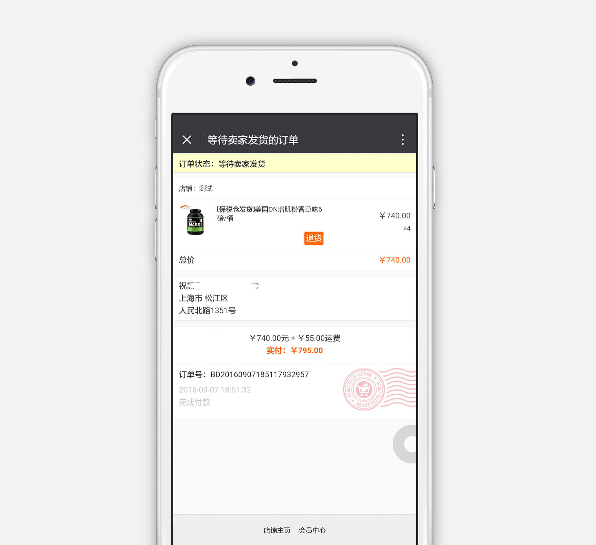
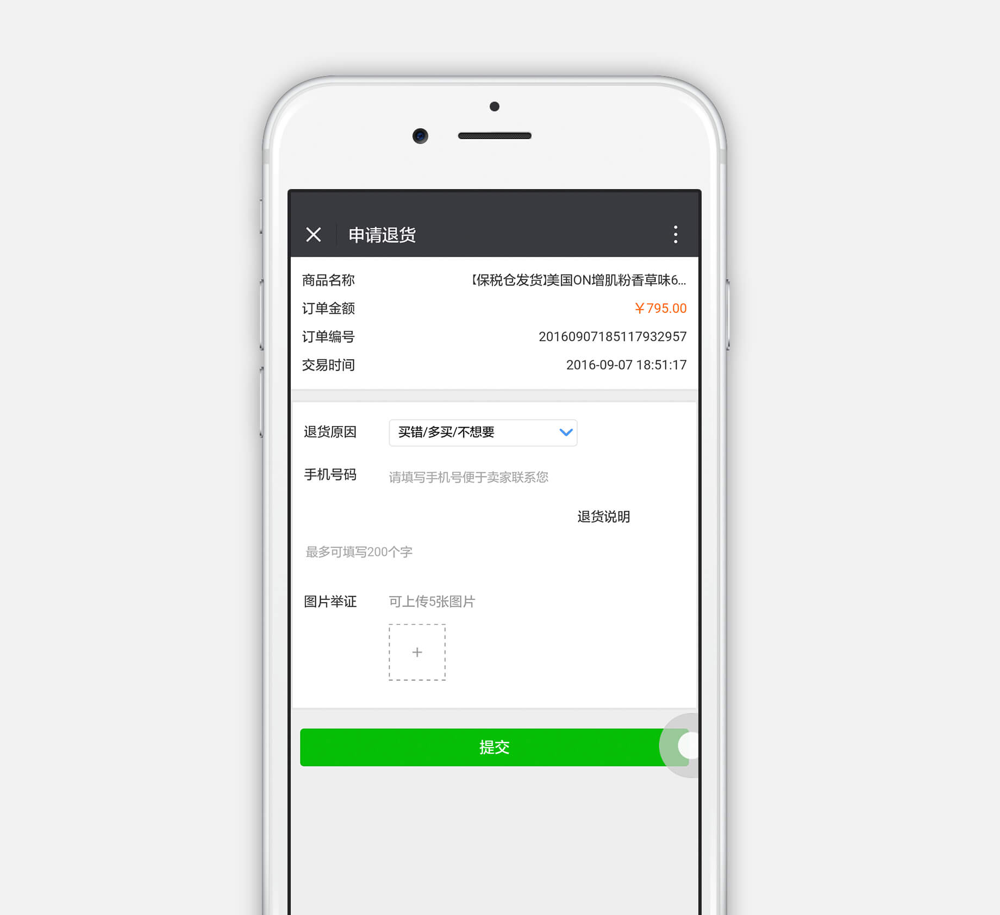

<ion-header>
  <ion-navbar hideBackButton="true">
    <ion-buttons left>
      <button ion-button clear icon-only color="black" (click)="goBack()">
        <ion-icon name="arrow-back"> </ion-icon>
      </button>
    </ion-buttons>
    <ion-title>如何退货</ion-title>
  </ion-navbar>
</ion-header>
<ion-content>
<div class="txt">如何退货：<br>进入订单管理-选中订单，点击【退货】按钮，进入退货申请页面，填写相关信息提交后供货方会收到您的申请进行售后处理。</div>
<div class="img">
	
	
</div>
</ion-content>